Os convênios da UEA viraram painéis abertos ao público. Este guia mostra onde eles ficam, o que cada tela responde e como transformar esses números em decisões para o seu Programa de Pós-Graduação.
O mapa da viagem
Todos os painéis ficam interligados por uma barra de botões no topo. Você entra pelo site da PROPESP e, a partir do painel de Gestão, chega a qualquer outro.
Site da PROPESPMenu Internacionalização → Convênios & Redes
→
Gestão de Convêniosacordos, países, vigência
Mapa de FluxoManaus × mundo
→
Matchs de Convênioslinhas UEA × pesquisadores das conveniadas
ODSAgenda 2030 × linhas de pesquisa
Impactoscoautoria, ODS, literatura cinzenta e uso fora da academia
Para quem é este guia
Coordenações e secretarias de PPG, docentes que planejam mobilidade ou cooperação e equipes que preparam relatórios institucionais. Não é preciso instalar nada nem fazer login: os painéis abrem em qualquer navegador atualizado (Chrome, Edge, Firefox ou Safari), no computador ou no celular.
01Capítulo 1
Chegando aos painéis
Os painéis estão publicados dentro do site oficial da Pró-Reitoria. O caminho é curto e sempre o mesmo, então vale a pena salvá-lo nos favoritos.
Atalho direto para a página dos painéisConvênios & Redes ↗proreitoria.uea.edu.br/propesp/index.php/internacionalizacao-convenios-redes/
Abra o site da PROPESPDigite proreitoria.uea.edu.br/propesp no navegador. Se aparecer o aviso de cookies no canto da tela, clique em Aceitar ou Decline; os painéis funcionam nos dois casos.
Passe o mouse em INTERNACIONALIZAÇÃONo menu verde do topo, pare o cursor sobre Internacionalização (marcador 1). Um submenu se abre. No celular, toque no ícone de menu e depois na setinha ao lado de Internacionalização.
Clique em “Convênios & Redes”É o segundo item do submenu (marcador 2).
Role até “Convênios, Acordos de Cooperação e Distribuição por Região”Abaixo das seções Erasmus+, GCUB e Capes Global está o painel, dentro de uma moldura verde. Ele leva alguns segundos para carregar.
proreitoria.uea.edu.br/propesp/
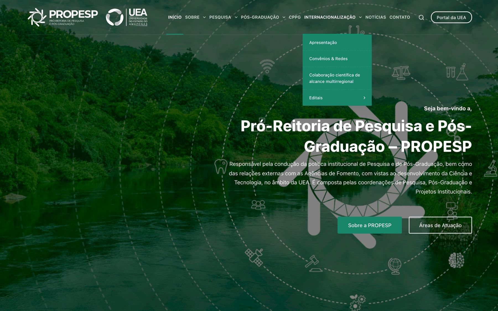
12
Página inicial da PROPESP. O submenu de Internacionalização aparece ao passar o mouse.
…/internacionalizacao-convenios-redes/
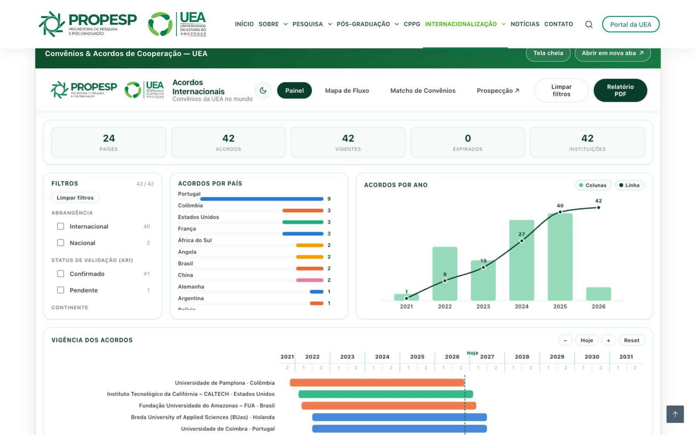
1234
O painel dentro da página Convênios & Redes.
Tela cheia: amplia o painel sem sair da página. Clique de novo para voltar.
Abrir em nova aba: abre o painel sozinho, com mais espaço. É a forma recomendada de trabalhar.
A barra de botões do painel: Painel, Mapa de Fluxo, Matchs de Convênios e Prospecção.
Relatório PDF: gera o relatório do recorte atual (capítulo 7).
Dica
Depois de abrir em nova aba, salve a página nos favoritos (Ctrl + D no Windows, ⌘ + D no Mac). Na próxima vez, você entra direto no painel sem passar pelo site.
Se o painel não aparecer
Espere de 5 a 15 segundos: o painel de Matchs carrega muitos dados e é o mais lento.
Recarregue a página (F5 ou ⌘ + R).
Redes institucionais às vezes bloqueiam o endereço github.io, onde os painéis estão hospedados. Teste em outra rede ou no celular.
02Capítulo 2
Gestão de Convênios
A porta de entrada. Aqui estão todos os acordos de cooperação da UEA: com quem, em que país, desde quando e até quando valem. É a tela para responder “temos convênio com essa universidade?”.
Painel “Acordos Internacionais · Convênios da UEA no mundo”Abrir Gestão de Convênios ↗internacionalizacao-create.github.io/dasboard-covenios-uea/docs/index.html
Acordos Internacionais · Painel
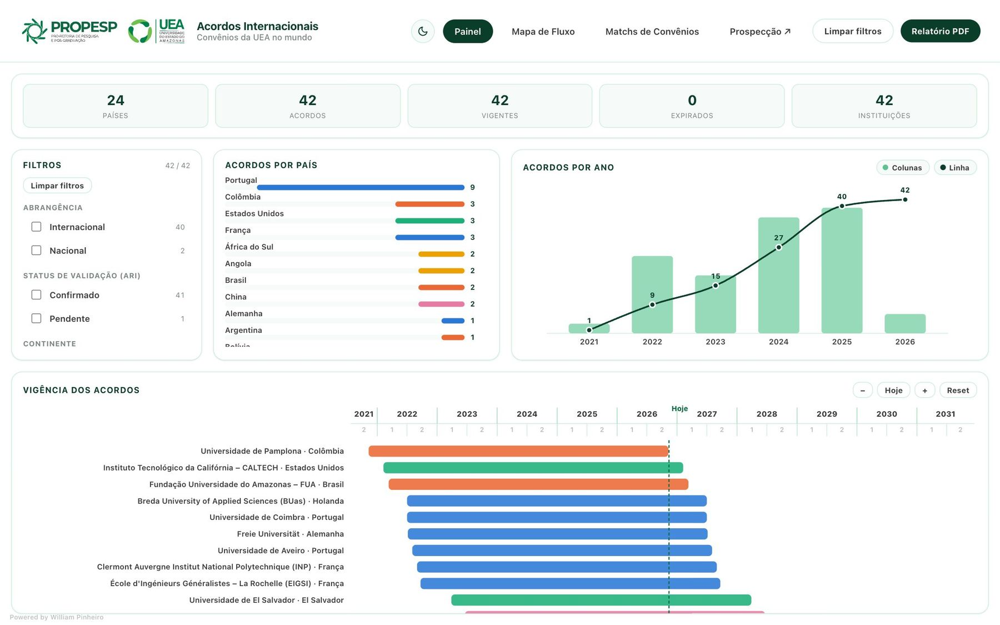
123456789
Visão geral do painel de Gestão de Convênios (dados de 11/11/2026: 42 acordos em 24 países).
Navegação: Painel, Mapa de Fluxo (globo), Matchs de Convênios (capítulo 3) e Prospecção ↗, que abre outra página para buscar novos parceiros.
Indicadores: países, acordos, vigentes, expirados e instituições. Mudam conforme os filtros.
Filtros: abrangência (internacional/nacional), status de validação pela ARI, continente e tipo de acordo. O número à direita mostra quantos acordos há em cada opção.
Acordos por país: clique numa barra para filtrar o painel por aquele país. Clique de novo para desfazer.
Acordos por ano: colunas = acordos assinados no ano; linha = total acumulado. Clique num ano para filtrar. Os botões Colunas/Linha ligam e desligam cada série.
Vigência dos acordos: cada barra vai do início ao fim do acordo. A linha tracejada “Hoje” mostra o que está vigente.
Zoom da linha do tempo: “–” e “+” aproximam, “Hoje” centraliza na data atual e “Reset” volta à visão completa.
Limpar filtros: volta tudo ao estado inicial.
Relatório PDF: baixa um relatório do recorte filtrado.
Passo a passo: quais acordos temos na Europa e quando vencem?
No quadro Filtros, role até “Continente”A lista de filtros tem rolagem própria. Desça até o grupo Continente.
Marque “Europa”Todos os quadros se atualizam: indicadores, barras por país, anos e vigência.
Leia a vigênciaNa linha do tempo, procure as barras que terminam perto da linha “Hoje”: são os acordos que precisam de renovação em breve.
Refine, se quiserClique numa barra de país (por exemplo, Portugal) para ficar só com ele. Os filtros se somam.
Registre o resultadoClique em Relatório PDF para guardar o recorte, ou em Limpar filtros para recomeçar.
Filtro Continente = Europa
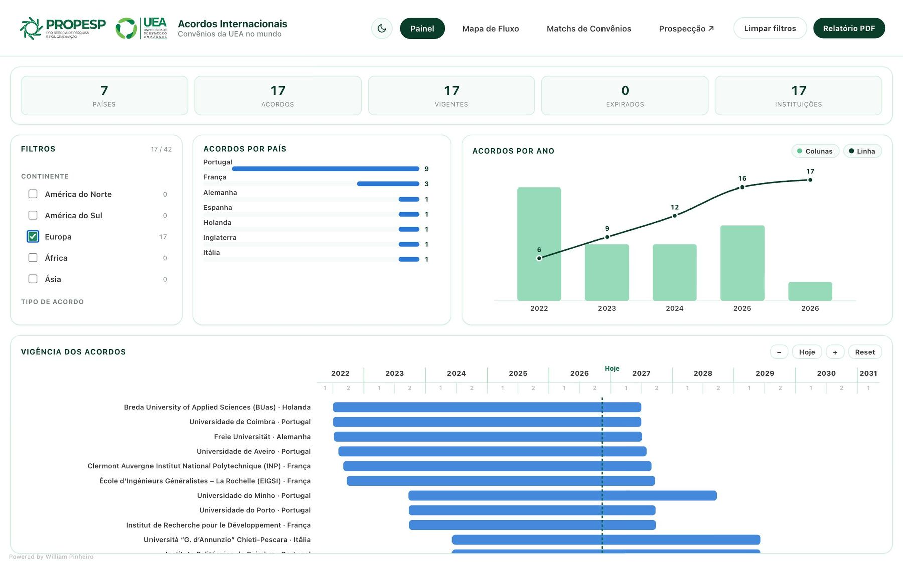
✓
Com “Europa” marcado, o painel passa a mostrar 17 acordos em 7 países, e a vigência lista só as instituições europeias.
Mapa de Fluxo: a UEA no mundo
O botão Mapa de Fluxo abre um globo em que cada linha liga Manaus a um país com acordo vigente. A cor indica o continente. Arraste para girar o globo, use a roda do mouse (ou o gesto de pinça) para aproximar e clique numa linha ou ponto para ver a lista de convênios daquele país.
…/dasboard-covenios-uea/docs/fluxo.html
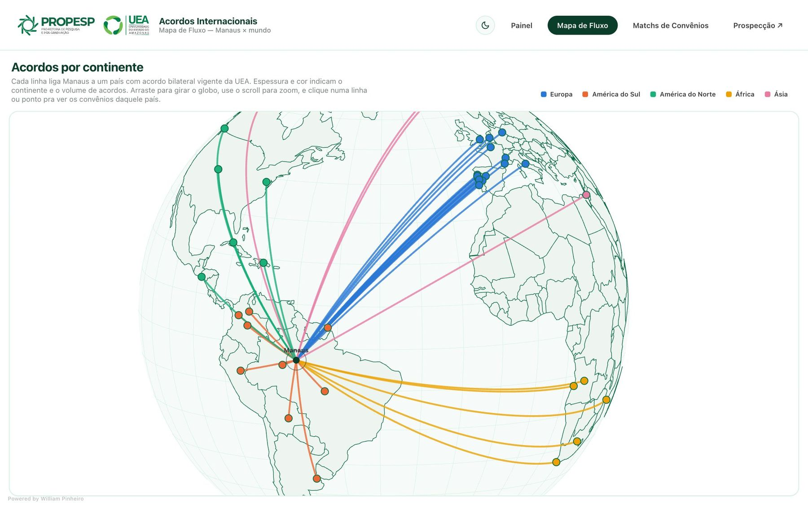
123
Legenda de cores por continente.
Manaus, origem de todas as conexões.
Clique num ponto para abrir a lista de convênios do país.
Para apresentações
O globo funciona bem projetado em reuniões de colegiado: gire até a região de interesse e clique no país para mostrar os acordos sem trocar de tela.
03Capítulo 3
Matchs de Convênios
O painel mais estratégico para a coordenação. Ele cruza as linhas de pesquisa oficiais dos PPGs da UEA com a produção dos pesquisadores das universidades conveniadas e mostra onde há afinidade temática, ou seja, colaborações em potencial.
Clique em “Matchs de Convênios” no painel de Gestão, ou use o atalhoAbrir Matchs ↗internacionalizacao-create.github.io/DASHBOARD-Matchs-de-convenios/docs/index.html
Como ler a tela
Lado esquerdo = UEA (programas, linhas de pesquisa e docentes). Centro = as conexões. Lado direito = o mundo (países, ODS e pesquisadores das conveniadas). Tudo que você filtra de um lado reflete no outro.
O que é um “match”?
Um modelo de linguagem (Sentence-BERT) compara o nome e a descrição da linha de pesquisa do PPG com as publicações de cada pesquisador da conveniada, encontradas pelo ORCID e pelo OpenAlex. Quando os textos têm significado parecido, forma-se uma conexão. O match indica afinidade temática, não interesse confirmado nem contato prévio.
ACADEMIC PARTNER FOUND · APF · Convênios · Painel
1234567891011121314
Painel de Matchs (11/11/2026: 29 PPGs, 323 docentes, 30 conveniadas com match e 44.903 conexões).
Barra do topo: Painel · Gestão de Convênios (volta ao capítulo 2) · ODS (capítulo 5) · Impactos (capítulo 6) · Mapa de Fluxo.
Limpar filtros.
Relatório PDF do recorte atual.
Totais do recorte: PPGs, docentes, conveniadas com match e conexões.
Programas (PPG): marque um ou mais programas. O número ao lado é o conceito CAPES.
Nível, modalidade, situação e Avaliação quadrienal CAPES 2021-2024: menus que esmaecem os PPGs fora do critério.
Linhas de pesquisa: clique numa linha para filtrar. O número é a quantidade de conexões.
Docentes UEA: busca por nome. Clicar num docente abre o perfil (capítulo 4).
Linha de pesquisa × Instituição conveniada: cada fio liga uma linha da UEA a uma universidade. Quanto mais grosso, mais conexões.
Similaridade semântica (SBERT): passe o mouse sobre um fio para ver o grau de afinidade (0 a 1).
País: limita as conveniadas a um país.
País da conveniada: mapa do país selecionado.
ODS: conexões por ODS. Filtre por universidade ou vá à “página ODS →”.
Pesquisadores das conveniadas: ranking por número de conexões. Clique num nome para abrir o perfil.
Passo a passo: com quem o meu PPG pode colaborar?
Marque o seu programaNo quadro Programas (PPG), marque a caixa do seu PPG. O diagrama central passa a mostrar só as suas linhas de pesquisa.
Escolha uma linha de pesquisa (opcional)Em Linhas de pesquisa, clique na linha que quer explorar. Clique de novo para desfazer.
Veja as universidades do lado direito do diagramaOs fios mais grossos levam às conveniadas com mais pesquisadores trabalhando no tema.
Passe o mouse sobre um fioO quadro Similaridade semântica mostra a nota de 0 a 1. Acima de 0,5 a afinidade é forte.
Filtre por país, se fizer sentidoNo menu País (lado direito), escolha um país, por exemplo, onde já existe um edital de mobilidade aberto.
Abra os nomesEm Pesquisadores das conveniadas, clique no primeiro nome do ranking para ver o perfil, com ORCID, publicações e o convênio da instituição.
Guarde o recorteClique em Relatório PDF. O relatório sai com os filtros que você aplicou.
Filtro: PPG CLIAMB
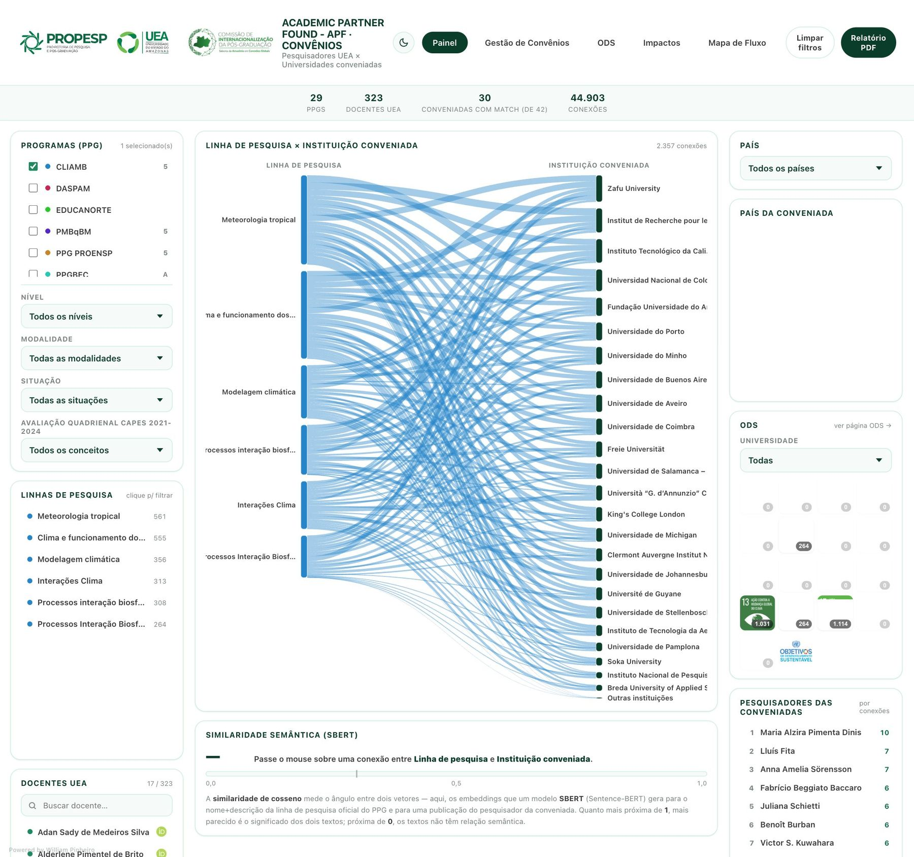
1
Um PPG marcado (CLIAMB): o diagrama mostra só as linhas do programa e as conveniadas ligadas a elas.
Filtro: País = Portugal
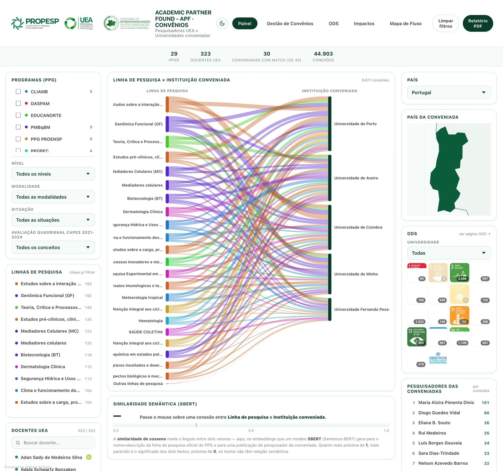
5ⓘ
País = Portugal: o mapa, os ODS e o ranking de pesquisadores passam a mostrar só as conveniadas portuguesas.
04Capítulo 4
Perfis e Mapa de Fluxo
Por trás de cada conexão há uma pessoa. Os perfis reúnem, numa só página, o que a coordenação precisa para um primeiro contato: vínculo, linhas em comum, publicações e situação do convênio.
Perfil do pesquisador da conveniada
Abre ao clicar num nome em Pesquisadores das conveniadas.
…/professor.html
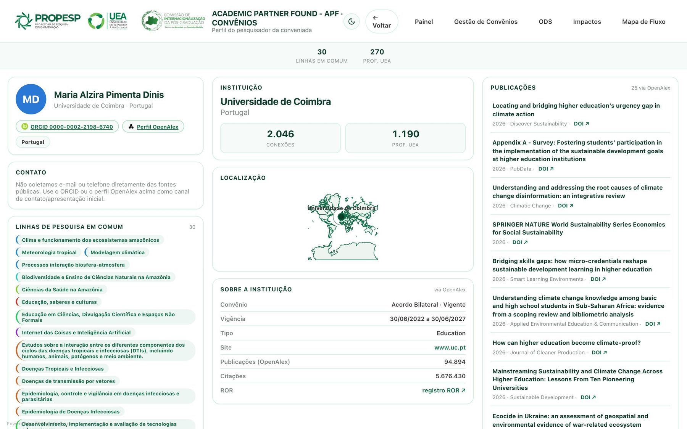
123456
ORCID e perfil OpenAlex: links para o currículo internacional do pesquisador.
Contato: o painel não coleta e-mail nem telefone. Use o ORCID ou a página institucional para o primeiro contato.
Linhas de pesquisa em comum com a UEA.
Sobre a instituição: tipo e vigência do convênio, site e números de produção.
Publicações recentes, com link para o DOI.
← Voltar retorna ao painel com os filtros que você tinha aplicado.
Perfil do docente UEA
Abre ao clicar num nome em Docentes UEA. Mostra o PPG, as linhas, os links para ORCID, OpenAlex e Lattes e, principalmente, quais pesquisadores das conveniadas estão mais próximos do trabalho daquele docente.
…/docente.html
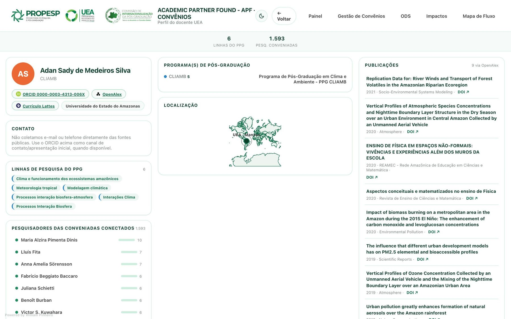
123
Links para ORCID, OpenAlex e Currículo Lattes.
Pesquisadores das conveniadas conectados: a lista de parceiros potenciais daquele docente.
Publicações do docente segundo o OpenAlex.
Mapa de Fluxo dos Matchs
O botão Mapa de Fluxo da barra superior dos Matchs abre outro globo: aqui as linhas ligam Manaus às instituições conveniadas com pesquisa em comum, e a cor indica o volume de conexões (poucas, moderadas, muitas). Clique numa linha para ver os detalhes e voltar ao painel já filtrado por aquela instituição.
…/DASHBOARD-Matchs-de-convenios/docs/flowmap.html
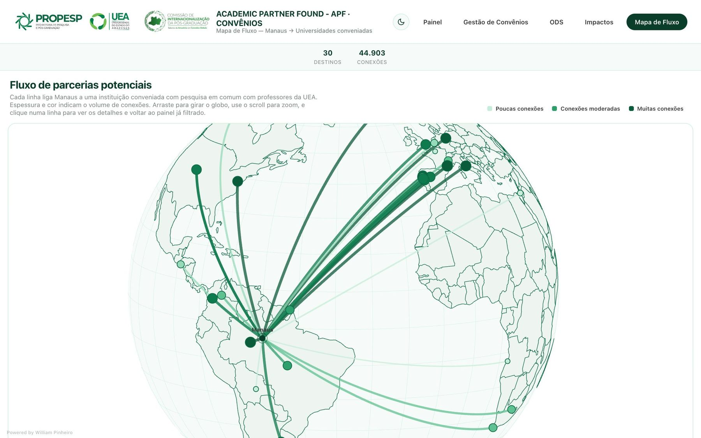
Fluxo de parcerias potenciais: 30 destinos e 44.903 conexões em 11/11/2026.
05Capítulo 5
Painel de ODS
Agenda 2030 × linhas de pesquisa da UEA. Cada linha oficial dos PPGs foi classificada em até três Objetivos de Desenvolvimento Sustentável. O painel mostra, para cada ODS, quais linhas da UEA tratam dele e quais conveniadas têm gente trabalhando no mesmo tema.
Botão “ODS” na barra dos MatchsAbrir ODS ↗internacionalizacao-create.github.io/DASHBOARD-Matchs-de-convenios/docs/ods.html
APF · Convênios · ODS
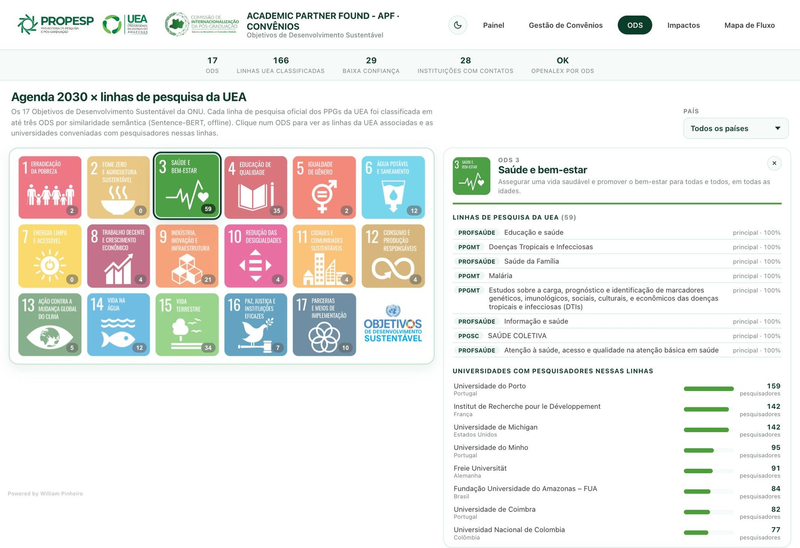
123456
Clique num ODS. O número no canto do quadrado é a quantidade de linhas da UEA classificadas nele.
País: restringe as universidades a um país.
O ODS escolhido, com nome e meta resumida.
Linhas de pesquisa da UEA ligadas ao ODS, com o PPG de origem e se o ODS é principal ou secundário naquela linha.
Universidades com pesquisadores nessas linhas: a “força na produção científica” de cada conveniada no tema, medida pelos matches entre as linhas e o ORCID dos pesquisadores.
× fecha o detalhe.
Universidade × ODS
Mais abaixo, uma matriz mostra cada conveniada (linha) contra cada ODS (coluna). O número na célula é a quantidade de pesquisadores com match forte (nota ≥ 0,5). Células mais escuras indicam mais gente; a coluna do ODS selecionado fica destacada. Clique no ícone de um ODS no cabeçalho para selecioná-lo.
Universidade × ODS
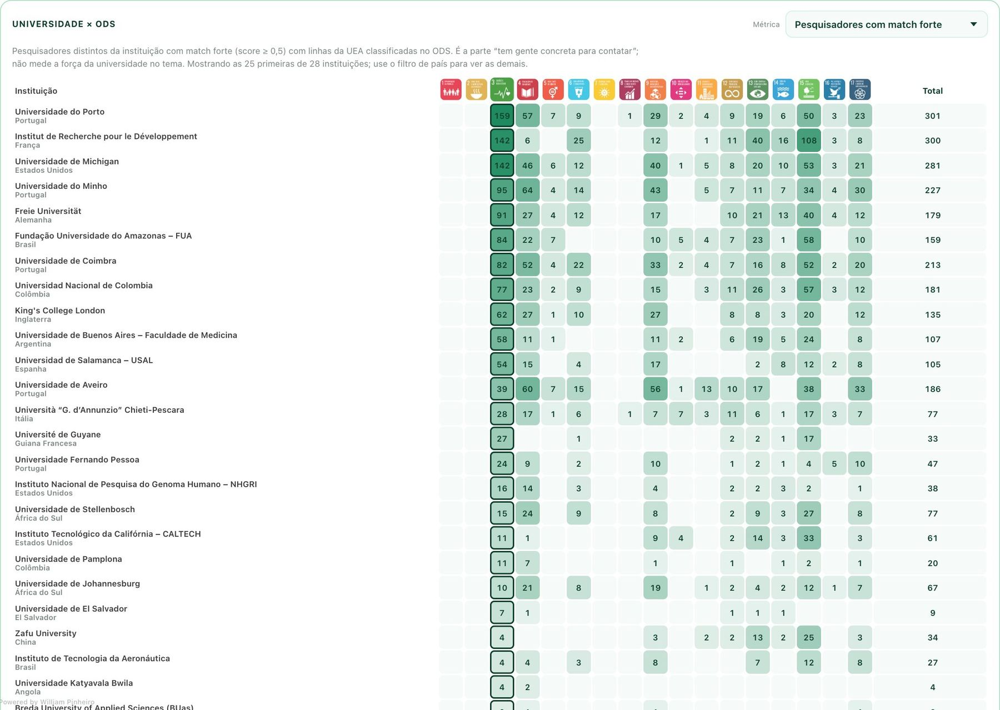
123
Métrica: troque o que a célula conta (por padrão, pesquisadores com match forte).
Coluna do ODS selecionado, em destaque.
Total da conveniada em todos os ODS.
Leia com cuidado
A matriz mostra onde há gente concreta para contatar num tema. Ela não mede a força da universidade no ODS em geral, só a parte da produção que conversa com as linhas da UEA. A tabela mostra as 25 primeiras instituições; use o filtro de país para ver as demais.
No topo da página ODS, a mesma barra de botões leva de volta ao Painel de matchs, à Gestão de Convênios, aos Impactos e ao Mapa de Fluxo.
06Capítulo 6
Relatório de Impactos
Os matchs mostram potencial; esta página mostra resultado. Ela segue o caminho completo de uma parceria: da coautoria com as conveniadas aos temas da Agenda 2030, à produção fora dos periódicos e ao uso da pesquisa fora da academia.
Botão “Impactos” na barra dos Matchs ou do painel de ODSAbrir Impactos ↗internacionalizacao-create.github.io/DASHBOARD-Matchs-de-convenios/docs/impacto.html
Antes de tudo: como ler estes números
A própria página traz esta nota no final, na seção Bastidores. Ela vem aqui no começo porque muda a forma de ler tudo o que vem depois.
Coautoria
Trabalho no OpenAlex com autores ligados à UEA e à conveniada. Coleta de 06/11/2026.
Período
Compara a data de publicação com o início do acordo mais antigo com a instituição. Coincidência no tempo não prova que o convênio causou a coautoria.
ODS das coautorias
Classificador automático do OpenAlex, com pontuação acima de 0,4. Um trabalho pode ter mais de um ODS.
ODS estimado (~)
Similaridade entre o título e a descrição do ODS (Sentence-BERT). Concordou com o OpenAlex em 65% de 832 trabalhos testados; apostar sempre no ODS mais comum acertaria 51%, então o ganho é moderado. Títulos que citam a Amazônia tendem a cair em Vida terrestre, mesmo quando tratam de saúde ou linguagem. Use como indicação, não como rótulo definitivo.
Professores
Ligação por ORCID e, sem ele, por nome exato. Só 323 nomes do painel são considerados, então a contagem é um piso.
Citações acadêmicas
Mostram alcance científico e não entram como impacto social.
Fontes
Apenas APIs gratuitas. Bases pagas de citação em políticas públicas e mídia não são consultadas, então o uso fora da academia pode estar subestimado.
APF · Convênios · Impactos
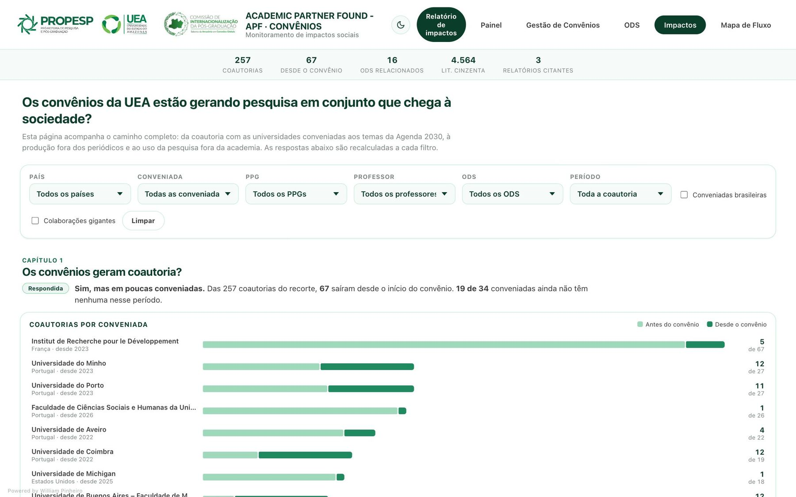
123456
Relatório de impactos: gera o relatório em PDF (capítulo 7).
Resumo do recorte: coautorias, quantas desde o convênio, ODS, literatura cinzenta e relatórios citantes.
Filtros: país, conveniada, PPG, professor e ODS.
Período: toda a coautoria, só desde o início do convênio ou só antes dele.
Conveniadas brasileiras e Colaborações gigantes (artigos com centenas de autores) podem ser incluídas ou excluídas. Limpar zera tudo.
Selo da resposta: Respondida ou Parcial, seguido da resposta curta para o recorte atual.
As perguntas que a página responde
Os convênios da UEA estão gerando pesquisa em conjunto que chega à sociedade?Pergunta-guia; filtre por país, conveniada, PPG, professor, ODS e período.
Os convênios geram coautoria?Capítulo 1 da página
Quais professores sustentam essas parcerias?Capítulo 2
A quais ODS essa produção se relaciona?Capítulo 3
O que a UEA produz fora dos periódicos?Capítulo 4 · literatura cinzenta
Quem usou essa pesquisa fora da academia?Capítulo 5
De onde vêm os números e qual a confiança neles?Bastidores
Capítulo a capítulo
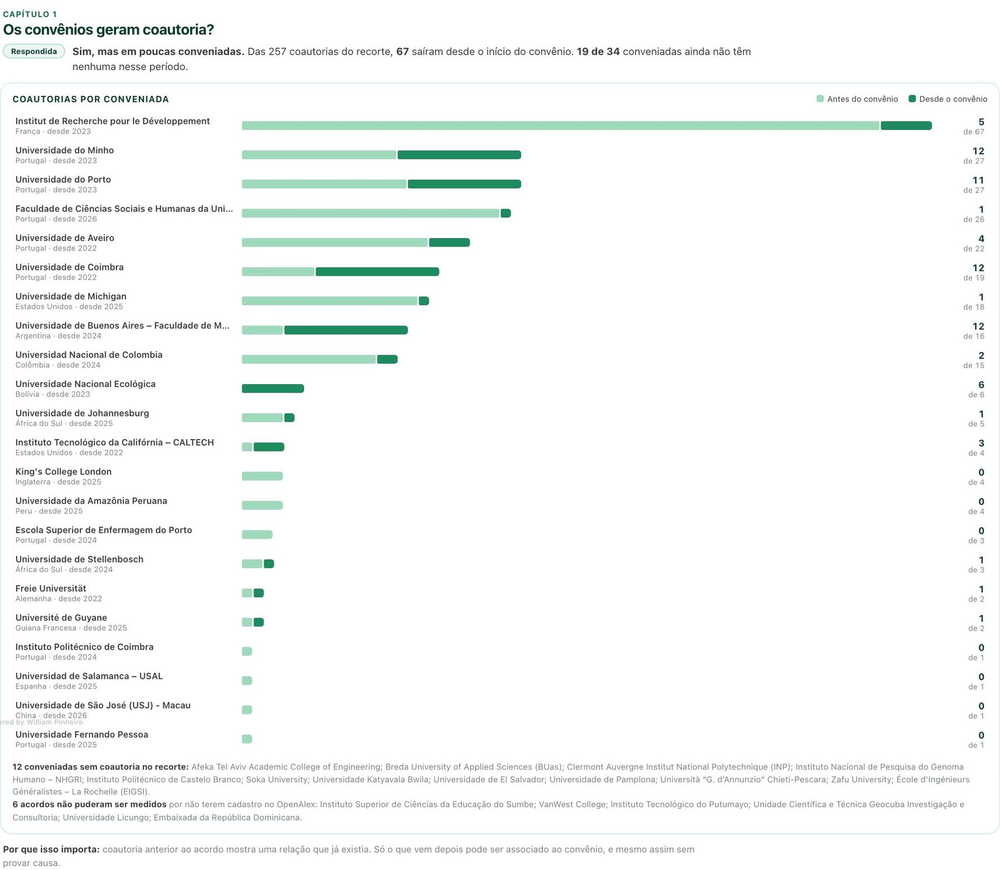
1 · Os convênios geram coautoria? Barras por conveniada: verde-claro = antes do convênio, verde-escuro = desde o convênio. Abaixo, a lista das conveniadas ainda sem coautoria.
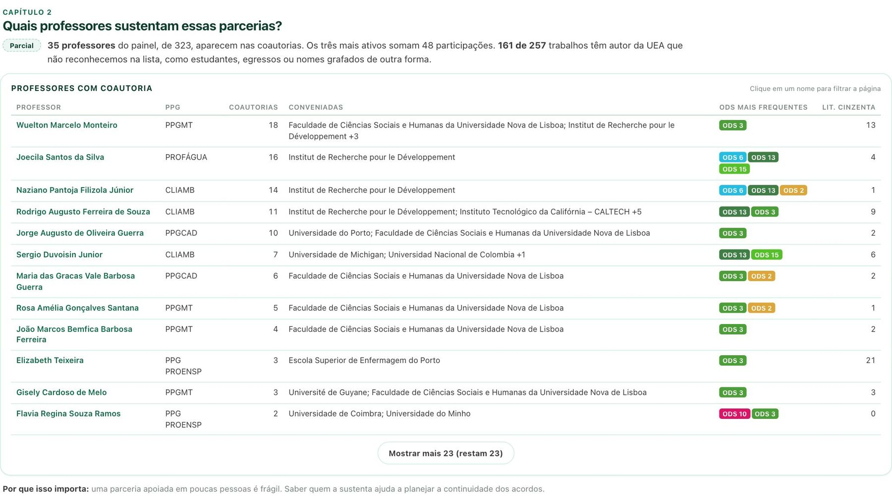
2 · Quais professores sustentam essas parcerias? Tabela com PPG, número de coautorias, conveniadas e ODS mais frequentes. Clique num nome para filtrar a página inteira por aquele professor.
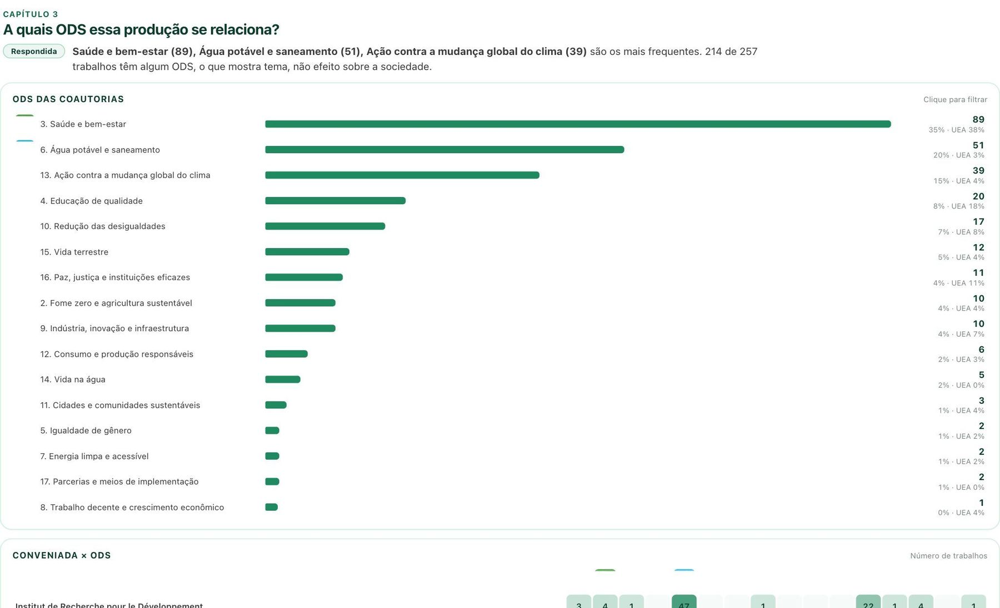
3 · A quais ODS a produção se relaciona? Ranking de ODS (clique para filtrar), matriz Conveniada × ODS e lista de publicações do recorte.
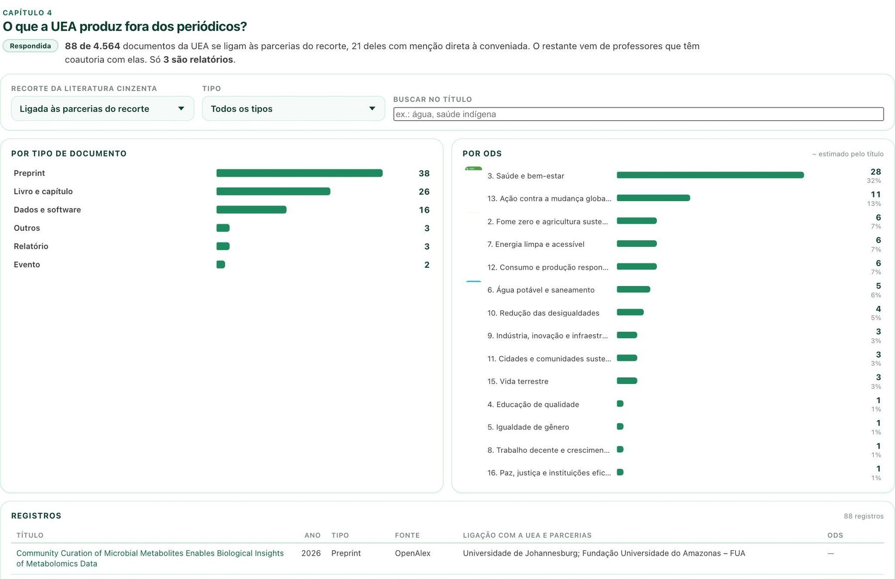
4 · O que a UEA produz fora dos periódicos? Preprints, livros, dados, softwares, relatórios e eventos. Escolha o recorte (ligada às parcerias, só com a conveniada citada ou toda a UEA), filtre por tipo e busque no título.
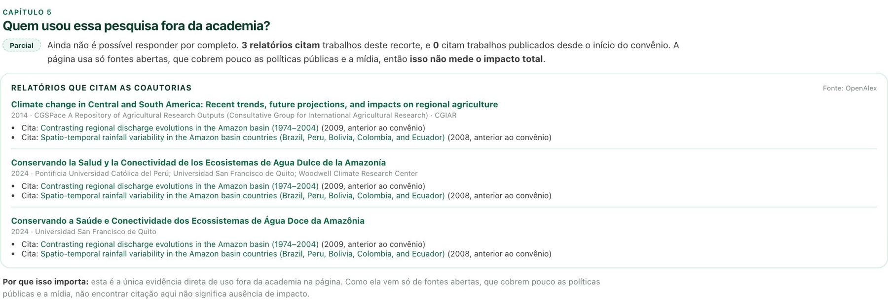
5 · Quem usou essa pesquisa fora da academia? Relatórios e documentos de política que citam as coautorias. É a única evidência direta de uso fora da academia na página. Não encontrar citação aqui não significa ausência de impacto.
Cada capítulo traz “Por que isso importa”
Ao final de cada bloco, a página explica o sentido do indicador. Um exemplo do capítulo 2: “uma parceria apoiada em poucas pessoas é frágil. Saber quem a sustenta ajuda a planejar a continuidade dos acordos”. Vale ler essas notas antes de citar os números em documentos oficiais.
07Capítulo 7
Gerando relatórios em PDF
Três painéis têm um botão de relatório. Todos seguem a mesma regra: o relatório sai com os filtros que estão aplicados na tela. Filtre primeiro e gere depois.
Painel
Botão
O que acontece
Conteúdo
Gestão de Convênios
Relatório PDF
Abre uma nova aba com o PDF pronto para baixar.
Indicadores, gráficos por país e ano, vigência e lista de acordos do recorte.
Matchs de Convênios
Relatório PDF
Abre o relatório em nova aba, com o botão Imprimir / Salvar como PDF.
Filtros usados, totais, distribuição por país, linhas de pesquisa por PPG com seus ODS, conveniadas e pesquisadores.
Impactos
Relatório de impactos
Abre o relatório em nova aba, com o botão Salvar como PDF.
A mesma narrativa da página, em capítulos com tabelas, mais a nota “Como ler”.
Passo a passo
Monte o recorteAplique os filtros que interessam (PPG, país, período…). Confira os totais no topo: é exatamente isso que vai para o relatório.
Clique no botão de relatórioNo canto superior direito do painel. O botão muda para “Gerando…” por alguns segundos.
Vá para a nova abaO relatório abre numa aba nova. Se nada acontecer, o navegador bloqueou a janela: veja o quadro abaixo.
Clique em “Salvar como PDF”Nos Matchs e nos Impactos, use o botão verde no topo do relatório (marcador 1 nas imagens abaixo). Na Gestão de Convênios o PDF já vem pronto: é só clicar no ícone de download do visualizador.
Escolha o destino “Salvar como PDF”Na janela de impressão, em Destino (ou Impressora), selecione Salvar como PDF. Deixe Gráficos de plano de fundo marcado para manter as cores e clique em Salvar.
Dê um nome que diga o recortePor exemplo: Matchs_PPG-CLIAMB_Portugal_2026-11.pdf. Um mês depois, você vai agradecer.
Relatório de Matchs
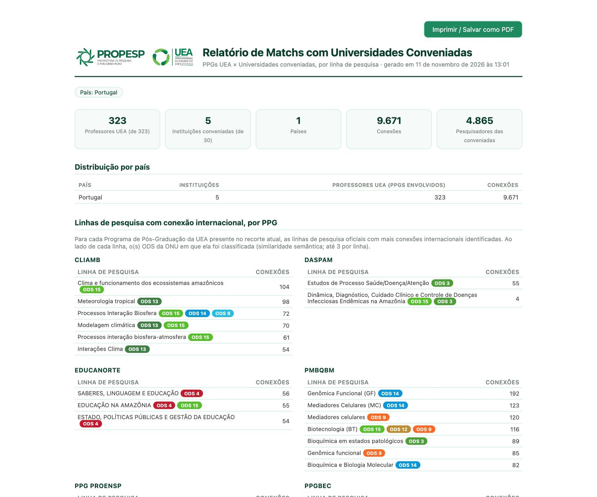
123
Relatório de Matchs gerado com País = Portugal. 1 Imprimir / Salvar como PDF · 2 filtros aplicados · 3 totais do recorte.
Relatório de Impactos Sociais
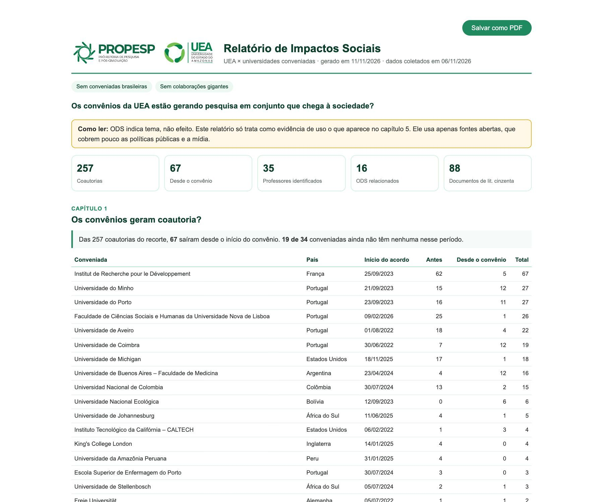
123
Relatório de Impactos Sociais.1 Salvar como PDF · 2 opções do recorte · 3 nota “Como ler”, que acompanha o documento.
“Cliquei e nada aconteceu”
O navegador pode ter bloqueado a janela nova. No Chrome e no Edge aparece um ícone na barra de endereço: clique nele e escolha Sempre permitir pop-ups deste site. Depois clique no botão de novo.
Se o painel estiver aberto dentro do site da PROPESP, use antes Abrir em nova aba ↗. Alguns navegadores bloqueiam janelas abertas a partir de molduras.
No celular, prefira gerar relatórios no computador: a opção “Salvar como PDF” muda de lugar em cada aparelho.
Atalho
Na aba do relatório, Ctrl + P (Windows) ou ⌘ + P (Mac) abre a mesma janela de impressão do botão verde.
08Capítulo 8
Do dado à ação
Um painel só vale pelo que muda na rotina do programa. Abaixo estão doze usos práticos, agrupados pelo momento da gestão em que aparecem, e três roteiros rápidos para começar.
Planejar
Planejamento
Plano de internacionalização do PPG
Use os Matchs filtrados pelo seu programa para escolher 3 a 5 conveniadas prioritárias, onde já há afinidade temática e convênio vigente.
Onde: Matchs → PPG → ranking de conveniadas
Renovação
Acordos perto de vencer
A linha do tempo mostra os acordos que terminam em breve. Cruze com os Impactos: um acordo com coautorias desde o convênio é um bom candidato à renovação.
Onde: Gestão → Vigência + Impactos → Capítulo 1
Lacunas
Convênios “adormecidos”
O capítulo 1 dos Impactos lista as conveniadas sem coautoria no período. São acordos assinados que ainda não viraram pesquisa conjunta: um ponto de partida para ações direcionadas.
Onde: Impactos → Capítulo 1
Conectar pessoas
Mobilidade
Destino para doutorado-sanduíche
Para cada estudante, abra o perfil do orientador: a lista “Pesquisadores das conveniadas conectados” sugere possíveis coorientadores no exterior, numa instituição com acordo.
Onde: Matchs → Docentes UEA → perfil
Cotutela
Dupla titulação e coorientação
Linhas com similaridade alta (≥ 0,5) e convênio vigente são o terreno mais firme para propor cotutela ou coorientação.
Onde: Matchs → SBERT + perfil do pesquisador
Convidados
Professores visitantes e bancas
O ranking de pesquisadores das conveniadas, filtrado por linha, gera uma lista de nomes para seminários, disciplinas compartilhadas ou bancas com membro externo internacional.
Onde: Matchs → Linhas → Pesquisadores das conveniadas
Captar recursos
Editais
Justificar a parceria na proposta
Editais de cooperação e mobilidade costumam pedir evidência de parceria prévia. O relatório de Matchs, com o recorte do projeto, mostra afinidade temática e convênio formalizado.
Onde: Matchs → Relatório PDF
Agenda 2030
Alinhar projetos aos ODS
Chamadas com foco em sustentabilidade pedem a conexão com os ODS. O painel de ODS mostra quais linhas do PPG já estão classificadas em cada objetivo e com quais universidades.
Onde: ODS → clique no objetivo
Redes
Montar consórcios
A matriz Universidade × ODS mostra várias conveniadas fortes no mesmo tema. Elas formam a base de uma rede multilateral sobre o ODS.
Onde: ODS → Universidade × ODS
Prestar contas
Avaliação CAPES
Inserção internacional no relatório anual
Coautorias com conveniadas, professores que sustentam as parcerias e produção técnica em literatura cinzenta ajudam a descrever a internacionalização do programa na coleta anual.
Onde: Impactos → filtro PPG → relatório
Impacto social
Evidenciar impacto na sociedade
O capítulo 5 traz documentos de política que citam trabalhos da UEA com conveniadas. Use como evidência qualificada, sempre com a ressalva de cobertura.
Onde: Impactos → Capítulo 5
Colegiado
Reuniões e planejamento estratégico
Projete o Mapa de Fluxo e o Painel de Matchs nas reuniões de colegiado. A discussão sobre prioridades fica mais objetiva com os dados na tela.
Onde: Mapa de Fluxo + Matchs (tela cheia)
Três roteiros para começar hoje
10 min
Roteiro A · Raio-X internacional do PPG
Matchs → marque o seu PPG.
Anote as 5 conveniadas com mais conexões e os 5 pesquisadores do topo do ranking.
Impactos → PPG = o seu → leia os capítulos 1 e 2.
Gere os dois relatórios e guarde-os numa pasta “Internacionalização · ano”.
15 min
Roteiro B · Um parceiro para um projeto
Matchs → clique na linha de pesquisa do projeto.
Opcional: País = o país do edital.
Passe o mouse nos fios mais grossos e anote as notas de similaridade.
Abra os perfis dos 3 primeiros pesquisadores: confira publicações recentes e vigência do convênio.
Faça o primeiro contato pelo ORCID ou pela página institucional, citando a linha em comum.
10 min
Roteiro C · Renovar ou reativar um acordo
Gestão → Vigência → identifique o acordo que vence em breve.
Impactos → Conveniada = a instituição → Período “Desde o início do convênio”.
Com coautoria: use o relatório como argumento para renovar. Sem coautoria: volte aos Matchs, filtre a universidade e procure docentes com afinidade para reativar a parceria.
Checklist pessoal
Os passos numerados deste guia têm uma caixinha “feito”. Ela fica salva só no seu navegador, para você acompanhar o que já testou.
09Capítulo 9
Dúvidas, cuidados e glossário
Os painéis são um ponto de partida qualificado, não um veredito. Estas respostas ajudam a usar os números com segurança.
O match garante que o pesquisador quer colaborar?
Não. O match indica que as publicações dele têm significado parecido com a descrição da linha de pesquisa. Interesse, disponibilidade e condições de cooperação só se confirmam no contato direto.
Meu PPG ou minha linha não aparece. Por quê?
Os matchs partem das linhas de pesquisa oficiais cadastradas para cada PPG e dos pesquisadores das conveniadas encontrados no OpenAlex. Linhas muito recentes, descrições muito curtas ou conveniadas sem registro no OpenAlex podem ficar de fora. Em 11/11/2026, 30 das 42 conveniadas tinham matches calculados. Informe a PROPESP se notar ausências.
Posso citar os números em documentos oficiais?
Sim, informando a fonte, a data de consulta e o recorte (filtros). Para impactos, cite também a nota “Como ler estes números”: coincidência no tempo não prova causa, a contagem de professores é um piso e o uso fora da academia pode estar subestimado.
Com que frequência os dados são atualizados?
Os dados vêm de coletas periódicas (a dos impactos é de 06/11/2026, indicada na própria página). Novos convênios e novas publicações entram nas próximas atualizações. Por isso, anote sempre a data em que gerou cada relatório.
Os painéis expõem dados pessoais?
Não são coletados e-mails nem telefones. Os painéis usam apenas informações públicas de produção científica (ORCID, OpenAlex, Lattes) e indicam esses perfis como canal de primeiro contato.
Glossário
Convênio / acordo de cooperação
Instrumento formal entre a UEA e outra instituição. O painel de Gestão mostra tipo, abrangência e vigência.
ARI
Assessoria de Relações Internacionais; o filtro “Status de validação (ARI)” indica se o acordo foi confirmado.
Match / conexão
Par “linha de pesquisa da UEA × publicação de pesquisador da conveniada” com afinidade de significado.
SBERT (Sentence-BERT)
Modelo de linguagem que transforma textos em vetores numéricos para comparar seus significados.
Similaridade de cosseno
Nota de 0 a 1 entre dois textos. Perto de 1, significados parecidos; perto de 0, sem relação.
ORCID
Identificador internacional e permanente de pesquisadores; liga a pessoa às suas publicações.
OpenAlex
Base aberta e gratuita de publicações científicas, autores e instituições, usada como fonte principal.
ODS
Os 17 Objetivos de Desenvolvimento Sustentável da Agenda 2030 da ONU.
Coautoria
Trabalho assinado por autores da UEA e da conveniada.
Literatura cinzenta
Produção fora dos periódicos: preprints, livros, capítulos, dados, softwares, relatórios e eventos.
Relatório citante
Documento de política ou relatório técnico que cita um trabalho em coautoria.
Recorte
O conjunto de dados que sobra depois dos filtros. É o que entra nos relatórios.
Guarde esta página
Todos os endereços
Os links abaixo abrem os painéis diretamente. No PDF, os endereços aparecem por extenso.
Guia dos Painéis de Convênios · PROPESP / UEA · Edição nº 1, novembro de 2026. Prints e números consultados em 11/11/2026; os painéis são atualizados periodicamente e podem mostrar valores diferentes. Autoria: William Pinheiro · Currículo Lattes